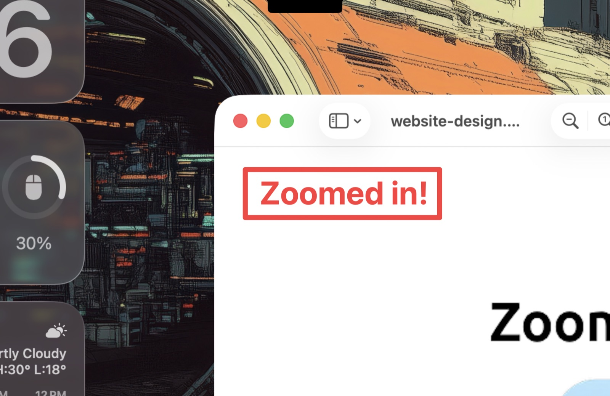
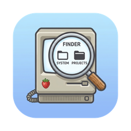
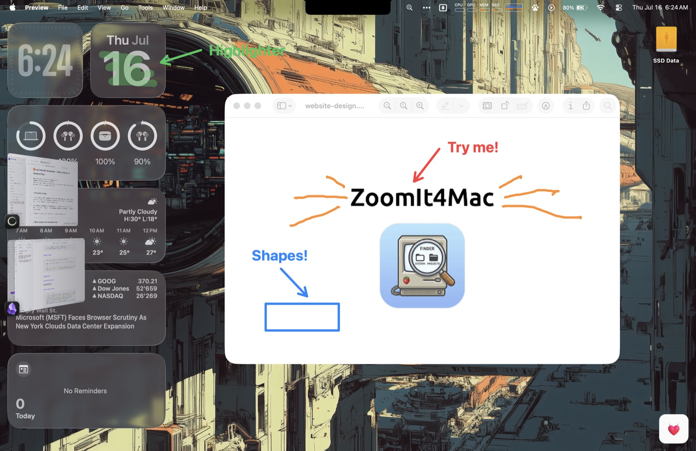
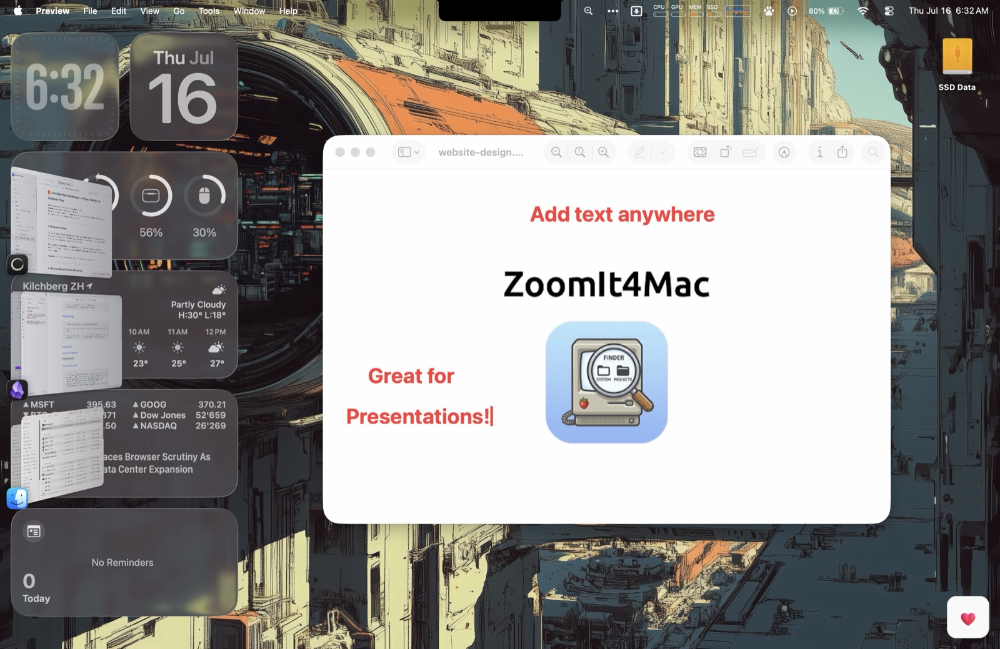
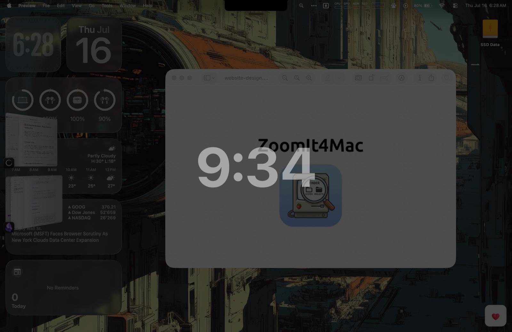
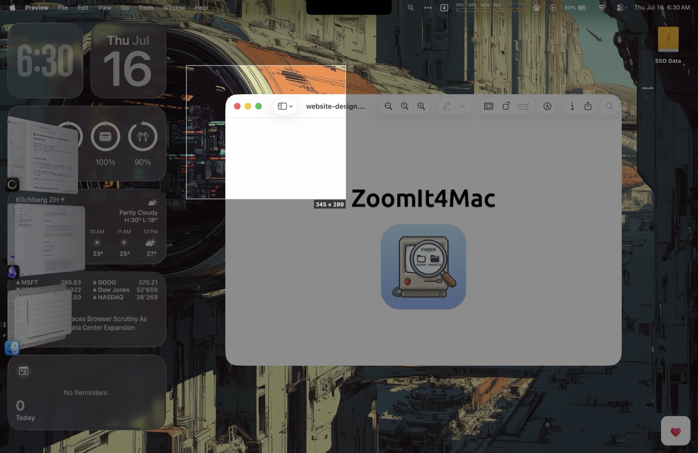
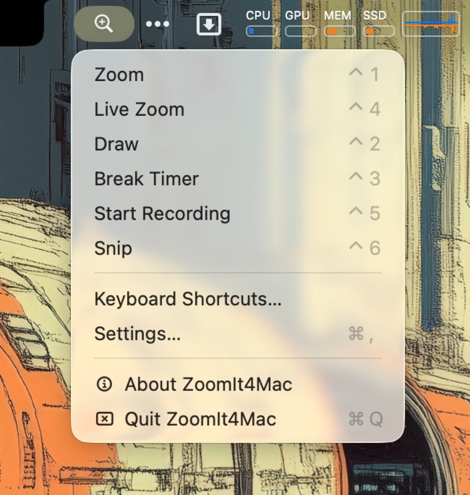

Zoom ⌃1
Freeze the screen and glide from 1× to 8×. Move the mouse to pan — every pixel of every edge is reachable. Live Zoom ⌃4 does the same on moving content.

The Sysinternals ZoomIt experience — native on your Mac.
Zoom, draw, record and snip your screen straight from the menu bar.
Free & open source · macOS 14+ · Apple silicon & Intel
brew install TechPreacher/tap/zoomit4mac


Freeze the screen and glide from 1× to 8×. Move the mouse to pan — every pixel of every edge is reachable. Live Zoom ⌃4 does the same on moving content.
Freehand pen, lines, arrows, rectangles, ellipses in six colors — plus a translucent highlighter H and a blur pen X for hiding what the audience shouldn't read.

Click anywhere and type on the screen. Resize on the fly with ⌘+ and ⌘−.

A full-screen countdown for workshop breaks — configurable duration, position, background and end-of-break sound.

Freeze, drag, release — the region lands on your clipboard. Hold ⌥ to save a PNG as well.

Screen Recording ⌃5 with optional microphone and system audio, every mode in the menu bar, rebindable hotkeys with conflict detection, a shortcuts reference panel and launch at login.
Download, open, drag ZoomIt4Mac to Applications. Signed and notarized.
brew install TechPreacher/tap/zoomit4mac
If Homebrew asks you to trust the tap: brew trust techpreacher/tap
Zoom, Live Zoom, Snip and Recording ask for Screen Recording once. Microphone is separate and optional. No Accessibility access needed.